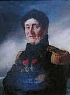
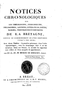
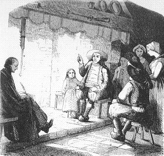
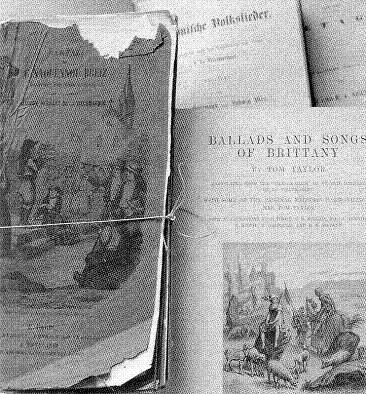
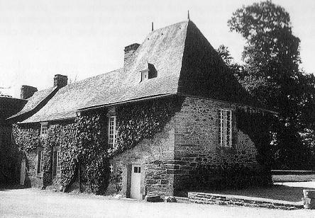

Le Barzhaz Breizh
Presentation
| Français | English | Deutsch |
|---|---|---|
|
Résumé
Le Barzhaz Breizh (Florilège de Bretagne) est un recueil de chants en breton publiés le 24 août 1839 à Paris. Il regroupe plus de 50 chants recueillis dans la tradition orale de Basse Bretagne. Son auteur est Théodore Hersart de la Villemarqué , alors agé de 24 ans. L'ouvrage connait un succès prodigieux et des éditions enrichies paraissent en 1845, puis en 1867. C'est alors que les premiers doutes sur l'authenticité des chants sont exprimés: on accuse La Villemarqué de les avoir inventés de toutes pièces. La polémique continuera après sa mort, le 8 décembre 1895. Il y a un peu plus de soixante ans, on a retrouvé les carnets d'enquête de La Villemarqué. Il s'agit bien de notes prises sur le vif et non de compositionsfaites après coup. On trouvera ici des arrangements des chants dont l'édition de 1867 du Barzhaz donne la ligne mélodique. Présentation par La Villemarqué d'un opuscule de 24 pages illustrées, publié, peu avant le Barzhaz de 1845, et intitulé "Barzaz pe Ganaouennou Breiz". Adresse aux Bretons Il faut que vous sachiez, tous autant que vous êtes, Tout le bien que du présent livre ont pu penser, Deux évêques, un roi, et le Pape à leur tête! Le roi de Prusse à de nobles messieurs et dames Qu'il avait rassemblés a tenu ce discours: « Les chants tristes bretons ont su ravir mon âme! » Les évêques de Quimper et de Saint-Brieuc Sont d'avis que jamais dans la langue bretonne On n'avait écrit rien d'aussi mélodieux! Le saint Père le Pape, aux enfants de sainte Anne , Confia qu'il n'avait jamais lu rien d'aussi beau Que ces chants provenant de la Basse-Bretagne. Que peut-on ajouter? Sinon qu'aux temps antiques, Le très saint roi David un jour avait écrit: «Chantez, car vous serez sauvés par vos cantiques! » Chantons, frères bretons, sur la mer et sur terre Ces doux airs du pays qui n'ont point leur pareil! Honneur à la Bretagne et à qui la révère! |
Résumé
The Barzhaz Breizh (Poetry of Brittany) is a collection of songs in Breton language first published on 24th August 1839 in Paris. It contained over 50 songs out of the oral tradition of Celtic Brittany. The author was Théodore Hersart de La Villemarqué who was then 24 years of age. The book was a great success and enlarged editions came out in 1845 and 1867. But then the genuineness of the collection was more and more questioned and La Villemarqué was reproached for having invented these songs. The controversy went on even after his death on 8th December 1895. About 60 years ago his notebooks were discovered. They contain real notes, jotted down during real inquiries so that these songs are by no means pure forgery. You will find here accompaniments in MIDI format to the monophonic tunes noted in the 1867 edition of the Barzhaz. Presentation by La Villemarqué of a booklet of 24 illustrated pages, published shortly before the Barzhaz of 1845, and entitled "Barzaz pe Ganaouennou Breiz". To the Bretons You must know, all of you, all my Breton brethren, In what esteem was held the book here on this shelf, By a king, two bishops and by the Pope himself! The high King of Prussia to noble gentlemen Gathered in his honour as to say was so kind: The Breton elegies have delighted my mind! » The bishops of Quimper and Saint-Brieuc as well Consider that never in Breton language were Written elegies so melodious and so fair! And the Holy Father, the Pope of Rome himself Confided that he had never read so lordly Songs as those that are sung in Lower Brittany. What can we add? Except that in the ancient times, Most holy King David is known to have stated: Whoever sings does well, for who sings will be saved! » Let us, Breton brethren, sing on the sea and land These sweet ditties of ours which are beyond compare! Honour to Brittany and whoever loves her! |
Kurz und bündig
Das Barzhaz Breizh (Liederbuch der Bretagne) ist eine Liedersammlung in bretonischer Sprache, die am 24.August 1839 in Paris veröffentlicht wurde. Sie umfasste ursprünglich über 50 Gesänge aus der mündlichen Überlieferung der keltischen Bretagne. Der damals 24 Jahre alte Graf Theodor Hersart de la Villemarqué hatte sie zusammengestellt. Dieses Buch hatte einen Riesenerfolg und bereicherte Neuauflagen erschienen in den Jahren 1845 und 1867. Dann wurden die ersten Zweifel über die Authentizität des Sammelgutes laut: La Villemarqué wurde beschuldigt, manche Lieder frei erfunden zu haben. Sein Tod, am 8.Dezember 1895, setzte dem Streit kein Ende. Vor etwa 60 Jahren entdeckte man die Notizbücher des Liedersammlers: sie enthalten echte, im Verkehr mit Bauern niedergeschriebene Aufzeichnungen und keine nachträglich zusammen-gekünstelten Schöpfungen. Auf dieser Site findet man Arrangements im MIDI-Format zu den in der Ausgabe von 1867 des "Barzhaz" als einstimmige Weisen verzeichneten Liedern. Ein Werbegedicht bei La Villemarqué für ein bebildertes 24-Seiten-Heftchen, das kurz vor dem Barzhaz von 1845 unter dem Titel "Barzaz pe Ganaouennou Breiz veröffentlicht wurde (bret. Original): D'ar Vretoned Ret eo reiñ da c'houzout d'an holl gwitibunan Ar pezh a vad a zoñj diwarbenn al levr-mañ Ur roue, daou Eskob hag ar Pab e-unan. Roue bras Prusia en-deveus lavaret D'an denjentil yaouank en-doa dastumet : « Gwerzioù Breizh a laka va spered souezhet ! » An eskop a Gemper hag hini Sant-Brieg : « N'eus netra, emeze, skrivet e brezhoneg En-deus doare ker kaer ha ker meuleudieg. » Lavaret en-deveus ar Pab, hon Tad santel : « Biskoazh n'am-eus lennet kanaouennoù evel Ar re pere a gan an dud e Breizh Izel. » Petra lavared ken ? Hag-eñ n'eus ket skrivet Roue santel David, en amzer dremenet : « Neb a gan, a ra mat hag a vezo salvet » ? Kanomp eta, Breizhiz, war vor ha war zouar Kanaouennoù hor bro pere n'eus ket o far. Hag enor bras da Vreizh ha da gement he c'har ! |
Un document exceptionnel, l'émission France-Télévision
de 1980 sur la Tradition orale en Basse-Bretagne:
Cliquer sur le lien ci-après
la Tradition orale en Basse-Bretagne
|
Un livre unique en son genre
Alors que la plupart des dictionnaires français réservent à Frédéric Mistral, le rénovateur de la langue provençale, la place qui lui revient à bon droit, rares sont ceux qui accueillent le nom du vicomte Théodore Hersart de La Villemarqué , l'auteur du Barzaz Breiz (ou "Barzhaz Breizh" , selon la graphie actuelle). Pourtant ce "Florilège de chants de Bretagne" à vocation historique et philologique connut lors de sa publication un succès mondial qui étonna son auteur lui-même, un jeune "chartiste" de 24 ans. George Sand écrira en 1856, dans "La filleule", au sujet de ce livre: "Une seule province de France est à la hauteur dans sa poésie, de ce que le génie des plus grands poètes et celui des nations les plus poétiques ont jamais produit: nous oserons dire qu'elle le surpasse: Nous voulons parler de la Bretagne... Le Tribut de Nominoë est un poème de 140 vers plus grand que l'Iliade, plus beau, plus parfait qu'aucun chef-duvre sorti de l'esprit humain. La Peste d'Elliant , Lez Breizh et vingt autres diamants de ce recueil attestent la richesse la plus complète à laquelle puisse prétendre une littérature lyrique... Vraiment, nous n'avons pas assez fêté notre Bretagne et...ces chants sublimes devant lesquels nous sommes comme des nains devant des géants... Qu'est-ce donc que cette race armoricaine qui s'est nourrie depuis le druidisme jusqu'à la chouannerie d'une telle moelle? Nous la savions bien forte et fière, mais pas grande à ce point avant qu'elle eut chanté à nos oreilles. Génie épique, dramatique, amoureux, guerrier, tendre, triste, sombre, moqueur, naïf, tout est là! Et au-dessus de ce monde de l'action et de la pensée plane le rêve:...toute la mythologie païenne et chrétienne voltige sur ces têtes exaltées et puissantes: en vérité, aucun de ceux qui tiennent une plume ne devrait rencontrer un Breton sans lui ôter son chapeau." Comment ce chef-duvre de littérature orale qui conférait une telle dignité à une langue de paysans jusqu'ici méprisée dans les temples du bon goût, a-t-il pu tomber dans cet oubli presque total? 
La mode des antiquités celtiques L'époque à laquelle cet ouvrage est venu, se passionnait pour les traditions et poésies populaires. C'est celle des frères Grimm et de Walter Scott. C'est aussi celle de la relativisation de l'héritage classique particulièrement cher aux Français qui se voulaient Romains sous la Révolution et l'Empire. Désormais ils seraient Gaulois. Dans cette reconquête des origines celtiques, les érudits armoricains sentent leur pays appelé à jouer le même rôle que celui tenu, en Grande Bretagne, par l'Ecosse de McPherson, Burns et Scott. Dès 1805 se constitue, à Paris, une petite Académie celtique qui se fixe pour mission la recherche de la langue et des antiquités celtiques (comprenez "gauloises"). Elle devient en 1845 la "Société des Antiquaires de France" , héritière des mêmes méthodes de collecte des faits qui suppléent au silence de l'histoire (écrite): les murs, usages et croyances, chansons, uvres en langues locales, musique populaire. Les premiers collecteurs de chants bretons Quelques précurseurs de La Villemarqué  
 Le dernier précurseur du Barde, qu'il convient de citer est Daniel-Louis Miorcec de Kerdanet , historien local et amateur de traditions orales qui s'était intéressé dès 1818 au fameux prophète Guinclan que La Villemarqué rebaptisera "Gwenc'hlan". Il lui avait consacré une de ses "Notices chronologiques sur les [...] littérateurs et historiens de la Bretagne" publiées à Brest.Au cours de recherches sur les Saints Bretons, il nota le poème qui raconte une épidémie de peste à Plouescat (à l'ouest de Saint-Pol-de-Léon) qui ressemble fort à celui collecté par La Villemarqué et Luzel dans ses "Gwerzioù", La Peste d'Elliant (entre Quimper et Rosporden). De même, c'est à lui que l'on doit d'avoir le premier consigné par écrit la gwerz de sainte Azénor au sein d'or que l'on retrouve collectée par La Villemarqué , puis, sous deux formes différentes, par Luzel ; enfin, récemment, par Donatien Laurent . Il contribua également à la sauvegarde du chant relatif à la submersion d'Is . Dans sa réédition de la "Vie des Saints" en 1837, il fera connaître plusieurs des chants qu'il avait recueillis. Collecteurs contemporains mais indépendants de La Villemarqué Les trois collecteurs qui suivent ne commencèrent leurs travaux que dans les années 1830-1835. Il s'agit de un autre, Ar bleizi-mor , qui relate la prise du Yéodet par une bande de "loups de la mer", chant dont l'existence était signalée par l'historien d'Argentré, dès 1582. Celui-ci voyait dans ces envahisseurs les normands d'Hastings qui détruisirent Koz-Yéodet en 836!; enfin l'énigmatique Den kozh dall , le vieillard aveugle, évoqué par La Villemarqué dans l'introduction au Barzhaz de 1867 à propos du fameux Guinclan , et dont l'authenticité ne semble faire aucun doute. Les publications précédant le Barzhaz Les travaux de tous ces collecteurs ne sortirent pas des cercles privés et restèrent inconnus du grand public. Cependant des hommes de lettres, des enseignants et des écrivains entreprirent de les publier: Priorité aux pièces historiques Autant dire que lorsqu'en 1834, Théodore de La Villemarqué, alors âgé de 19 ans, entreprend ses propres collectes, la recherche des chants bretons est devenue, non seulement une mode chez l'élite bilingue de Basse-Bretagne, mais une activité dont on connaissait le potentiel par les pièces de portée historique qu'on avait découvertes. Mais à cette date, tous les collecteurs considèrent que ces témoignages historiques sont des restes dégradés par l'usure des siècles et qu'il convient de restaurer avant de les offrir au public. De cette conception qui trouve son prolongement en architecture chez un Viollet-le-Duc, et qui sera combattue impitoyablement par ses successeurs, le jeune barde à l'imagination poétique débridée ne parviendra d'autant moins à se défaire, qu'elle lui valut pendant de longues années une reconnaissance enthousiaste.
Un Rastignac breton Le jeune Théodore était le huitième enfant du comte Pierre-Michel Hersart de La Villemarqué qui fut député royaliste ultra de 1815 jusqu'à la chute de Villèle en 1827 et de Marie-Ursule Feydeau de Vaugien , dame du Plessix-Nizon, près de Quimperlé où il naquit en 1815. C'est au manoir du Plessix qu'il passa sa petite enfance, quotidiennement en contact avec la langue bretonne, même si dans sa famille on ne s'exprimât qu'en français. Il fut éduqué chez les Jésuites de Sainte-Anne d'Auray, puis jusqu'au baccalauréat aux petits séminaires de Guérande et de Nantes. Il sera, toute sa vie un catholique fervent. Un collectionneur de relations influentes Cependant, plus qu'un renom régional, c'est une stature nationale que le jeune homme ambitionne. 
Théodore Hersart de La Villemarqué par Raymond Lheureux |
Objectifs et méthodes
Une lettre (conservée à la bibliothèque municipale de Caen) adressée le 11 décembre 1834 à l'abbé de La Rue , auteur des "Recherches sur les ouvrages des Bardes de la Bretagne armoricaine", précise les objectifs du collecteur. "Vous ne songiez pas, quand vous traciez ces lignes: 'C'est aux littérateurs de la Bretagne de faire valoir [ces ouvrages] pour l'honneur de leur pays', qu'à dix-neuf ans de là elles dussent porter des fruits. Voilà pourtant ce qui est arrivé, et si je m'occupe en ce moment de l' histoire de la littérature bretonne et de ses rapports avec la littérature primitive de la France , vous seul m'en avez donné l'idée, vous seul aurez le mérite de mon ouvrage, au cas où il y en eût quelqu'un."  Le premier Barzhaz Breizh On verra, à propos du chant "Gwenc'hlan" sur lequel s'ouvrait le premier Barzhaz, celui de 1839, que ce projet se heurta tout d'abord à de sérieuses difficultés : Le jeune Théodore qui, entre-temps, avait été missionné (avril 1838) par le Ministère de l'Instruction publique pour participer en octobre au congrès celtique, dit "Eisteddfod" d'Abergavenny au Pays de Galles, dut donc se résoudre à publier à Paris le 24 août 1839 son ouvrage à compte d'auteur: 54 pièces (33 chants historiques, 16 chants d'amour et 5 chants religieux) dont chacune était, selon une disposition reprise des "Chants populaires de la Grèce moderne" de Claude Fauriel, présentée dans sa traduction française, précédée d'un "argument", suivie de notes et pourvue de l'original breton imprimé sur la page opposée. Cette première édition tenait sur deux volumes et s'ouvrait sur une préface de 78 pages. L'auteur y analysait, selon les idées de l'époque, cette littérature orale censée prolonger celle des bardes armoricains du haut Moyen- Age, eux-mêmes héritiers des anciens bardes de l'île de Bretagne qui, depuis McPherson et son "Ossian", fascinaient l'Europe entière. Un succès foudroyant  Quelques semaines seulement après cette parution, des articles élogieux fleurissent dans les journaux de Bretagne, puis dans la presse parisienne. Dans les années qui suivent, la presse étrangère prend le relai. On remarque en particulier l'éloge appuyé du philologue autrichien Ferdinand Wolf (1796 - 1866) qui recommande en 1841 la méthode prônée par La Villemarqué aux savants germaniques, pourtant en pointe dans le domaine de l'édition des textes populaires avec le recueil d'Arnim et Brentano, "Des Knaben Wunderhorn" paru en 1819 et ceux des frères Jacob et Wilhelm Grimm dont les "Kinder- und Hausmärchen" et "Deutsche Sagen" remontent aux années 1812-1818. Enfin, comme il est dit à propos des "Séries", beaucoup de chants du Barzhaz, mais pas tous, font l'objet de traductions généralement en vers, en anglais, allemand, suédois et polonais...Le second Barzhaz (1845) C'est ce qui conduit La Villemarqué à étendre ses recherches à de nouveaux territoires bretons , en particulier la haute Cornouaille, où d'anciens chouans lui enseignent un répertoire quasi-clandestin de chants de combat qui témoignent des nombreuses jacqueries qui y éclatèrent, et à publier en 1845 une nouvelle édition du Barzhaz enrichie de 33 nouveaux titres , dont 30 chants historiques. Plusieurs d'entre eux ( Lez Breizh , Nominoë ,..) expriment à l'égard de l' "ennemi français" un sentiment d'hostilité qu'on ne trouvait pas dans l'édition de 1839. La critique française et étrangère ne met nullement en doute l'authenticité historique de ces nouvelles pièces et accueille ce nouvel ouvrage avec un enthousiasme renouvelé. Il édite en 1865 un drame religieux imprimé à Paris en 1530: "Le grand Mystère de Jésus" , salué par de nombreux articles élogieux. De ce fait, il est considéré comme une personnalité scientifique de premier plan.
La querelle du Barzhaz Breizh En 1867 , à l'occasion de la troisième refonte du recueil , le linguiste spécialiste des langues celtiques, d'Arbois de Jubainville reproche à l'auteur d'en rester toujours aux " préoccupations exclusivement historiques et esthétiques" qui étaient les siennes trente ans plus tôt, sans tenir compte des exigences nouvelles que la lecture des nombreux autres recueils publiés depuis, auraient dû lui imposer. Il ne pouvait plus, disait-il, "se contenter d'une gloire purement littéraire, et laisser faire par d'autres des travaux d'érudition dont l'honneur lui revenait de droit, et qu'il était mieux que tout autre capable de nous donner." On trouvera dans le commentaire du chant Retour d'Angleterre la perspicace critique qu'il en fit en mars 1868, sur un ton des plus courtois. Chez les folkloristes bretons qui s'étonnaient de ne pas retrouver dans leurs collectes les pièces les plus frappantes du Barzhaz, le scepticisme s'exprima bientôt d'une manière bien moins courtoise. Lors de leur Congrès celtique international de Saint-Brieuc, le 17 octobre 1867 , La Villemarqué fut prié de faire connaître les relevés d'enquête sur lesquels il s'est appuyé pour établir ses textes. Dans la préface qu'il rédige pour la réédition de l'antique (XIVème siècle) dictionnaire de Lagadeuc , ouvrage mis en vente le jour de l'ouverture du congrès, l'Archiviste du Finistère, Le Men , accuse La Villemarqué, dans des termes d'une rare violence, d'avoir commis des faux: " Il est des limites que l'imagination ne doit pas franchir. Jouez au barde, à l'archibarde ou même au druide si cela vous amuse, mais n'essayez pas de fausser l'histoire par vos inventions . La vérité se fera jour tôt ou tard et de vos tentatives malhonnêtes, il ne restera que le mépris." La querelle du Barzhaz Breizh, ainsi ouverte, se poursuivra longtemps après la mort de l'auteur, en 1895. D'abord cantonnée à de grandes revues françaises et étrangères et à des publications scientifiques, elle finira par être portée par les journaux bretons devant le grand public. L'attitude de La Villemarqué L'auteur du Barzhaz refusera toujours d'intervenir publiquement dans la controverse et s'en tiendra à sa déclaration du 17 octobre 1867 devant le congrès de Saint-Brieuc: "Je n'ai rien à dire, rien à ajouter, sinon que j'ai cherché loyalement , sincèrement, la vérité historique et philologique en confrontant les divers textes." Le chagrin et l'expiation La Villemarqué revendiquera toujours le droit d'avoir de la vérité en matière de poésie populaire une conception différente de celle de ses contradicteurs, cette vérité qu'il considère avoir toujours recherché sincèrement et loyalement. Tout au plus concèdera-t-il en privé avoir parfois par imprudence ou par crédulité manqué de rigueur scientifique . Les carnets de collecte Bien entendu cette jouissance dans l'auto-flagellation explique en partie seulement que, s'il était triste de voir les jeunes générations s'acharner sur celle de ses uvres qu'il chérissait entre toutes, La Villemarqué refusât de s'expliquer sur ses sources. Car on sait maintenant que, sans doute pour s'en servir un jour, il avait conservé toutes ses notations de terrain et qu'il eût été en mesure de fournir à ses détracteurs toutes les explications demandées. Sa position, à cet égard, a d'ailleurs été fluctuante : en 1867 il envisageait, si celui-ci était venu au congrès de Saint-Brieuc, de soumettre à Jubainville qui l'avait pris à partie, le cahier où se trouvait le nom du saint, Rassian, cité dans le chant La Peste d'Elliant . (Remarquons toutefois que ce nom n'apparaît pas dans la transcription qu'a faite M. Donatien Laurent de la page 104 du cahier où est consigné le chant "Elian"). Il montra ses cahiers à Ernault , qui écrivit à Gaidoz, le directeur de la "Revue celtique", le 2 novembre 1879: "Il m'a montré plusieurs cahiers contenant quelques-uns des éléments du Barzaz-Breiz. (Il y avait d'autres cahiers qu'il a malheureusement brûlés , comme inutiles, m'a-t-il dit). Ces cahiers renferment aussi plusieurs chansons qu'il n'a pas publiées . [...] Enfin, après m'avoir dit qu'il avait montré ses preuves à ceux qui les premiers avaient montré de l'intérêt à son livre, il ajouta qu'il lui en restait assez entre les mains pour convaincre les incrédules." La nécessité d'une édition critique du Barzhaz Mais il savait aussi que ces preuves n'étaient pas suffisantes en elles-mêmes et n'auraient pas manqué de susciter de nouvelles interrogations et de faire rebondir la querelle. Le choix était entre l'édition critique des 90 chants du recueil ou continuer de se taire. Il a penché un moment pour la première solution sous l'influence d'Ernault, comme ce dernier l'écrivit à Gaidoz en 1881. Six mois plus tard, cependant, La Villemarqué écrit à Ernault qu'il envisage une solution bien en retrait: l'"édition critique" est remplacé par une nouvelle édition du recueil avec une "introduction" dont le sujet serait l'origine du Barzhaz. Mais, même cette édition critique au rabais ne verra pas le jour et les deux dernières éditions qui paraissent du vivant de La Villemarqué reproduisent celle de 1867 sans changement et avec les mêmes défauts. L'éloge funèbre de La Villemarqué prononcé le 13 décembre 1895 par Maspéro , président de l'Académie des inscriptions et belles lettres montre que l'on considérait la querelle comme close: "L'historien et le philologue savent aujourd'hui ce qu'ils doivent penser de ces adaptations bretonnes; ils y ont déterminé la part qui appartient premièrement au peuple, celle qui revient à l'éditeur , et celui-ci n'a pas toujours lieu de s'en plaindre: maintenant que les questions d'origine sont tranchées, chacun peut, en parcourant le livre, se laisser séduire par la poésie qu'il exhale." Pour déterminer la part du peuple, comme l'indique Jubainville à propos du Retour d'Angleterre , il suffisait de confronter les textes du Barzhaz avec ceux de Luzel, les "vraies versions". Ce qui ne se trouvait pas chez ce dernier était imputable à l'éditeur-poète!
|
Nouvelles affirmations contestables
Après la disparition de La Villemarqué, d'Arbois de Jubainville fit paraître en 1900 une importante note dans la "Revue celtique (tome XXI, 1900, pages 258-286) développée 2 ans plus tard par son auteur dans la même revue. Elle montre de façon éclatante à quelles conclusions erronées, le mutisme de La Villemarqué pouvait conduire un critique pourtant impartial et compétent et qui avait bien connu le Barde: En résumé, La Villemarqué était un plagiaire, ignorant le breton, obligé de payer des rabatteurs et un traducteur, et, s'il avait publié des forgeries, c'est qu'il était, en plus, un naïf... Réactions de la famille de La Villemarqué  Lorsque ces accusations furent reproduites le 5 septembre 1906, dans un journal parisien, "Le Petit Journal", où l'auteur, Charles Le Goffic , allait jusqu'à utiliser le mot de "supercherie" , la famille jugea le mot suffisamment blessant pour que le fils du Barde, Pierre de La Villemarqué , décidât d'intervenir et d'annoncer qu'il détenait les preuves innocentant son père. C'est ce qu'il fit en déclarant, dans un article paru dans le "Nouvelliste de Bretagne", le 13 septembre 1906, qu'il détenait au manoir familial de Keransquer une liste établie par la propre mère de La Villemarqué, antérieurement aux recherches de son fils et comportant une cinquantaine de titres de chants, avec indication des noms et adresses des chanteurs à qui elle les devait. Il citait quelques-uns de ces titres: c'était effectivement les mêmes que ceux du Barzhaz:" La Fiancée en Enfer ' , chantée par Annaïc Ollivier de Kerigazul-Nizon, "la Prédiction de Guinclan " , par Annaïc Le Breton, du même village. Cependant, ce document aurait mérité un examen bien plus attentif, avant d'être publié. C'est ainsi que le second chant est indiqué dans le Barzhaz comme "recueilli en Melgven". Il intriguait d'avantage le lecteur sans répondre à son attente et la polémique reprit de plus belle , cette fois dans une revue érudite locale, "Le Fureteur breton", sous la plume de "Keramborn" , alias Léon Durocher. Le livre de Pierre de La Villemarqué C'est ce qui décida Pierre de la Villemarqué à consacrer un livre à la vie et aux uvres de son père. Cet ouvrage, "La Villemarqué, sa vie et ses oeuvres" parut, avec un tirage très limité, à Vannes en 1908, et ne fut vraiment connu que lors de sa réédition, revue et augmentée, à Paris, chez Champollion, en 1926. Il donne le texte intégral des fameuses listes ou "Tables des matières" de la Dame de Nizon. Faut-il ou non publier les manuscrits du Barde? Pierre envisagea effectivement de publier ces matériaux. Dans une lettre du 2 mars 1908, il explique à sa sur aînée qui était hostile à la publication de l'ouvrage qu'il préparait: "Mon père ne m'aurait pas dit bien des fois en me montrant ses petits carnets: "Voilà mes textes!" s'il n'avait pas eu l'idée qu'on pourrait en faire la justification de ses Chants populaires" Il s'en ouvrit à son cousin, H. du Rusquec qu'il jugeait plus compétent en matière linguistique. Celui-ci lui répondit dans une lettre datée du 1er février 1908: Autrement dit: si les manuscrits témoignent de façon irrécusable du travail de recherche effectué par l'auteur, ils montrent aussi clairement que l'usage qu'il en faisait ne saurait répondre aux exigences d'un travail scientifique. Pierre écouta le conseil et finit par abandonner son projet, malgré les propositions d'assistance qu'il reçut de E. Ernault (que son père 30 ans plus tôt avait envisagé de charger de l'édition critique du Barzhaz), puis du chanoine Buléon , archiprêtre de la cathédrale de Vannes, écrivain breton de talent de la "Revue Morbihannaise", qui eut connaissance en copie pour l'une, en fac-simile pour l'autre, de 2 chansons des carnets. Ce dernier écrivait le 9 février 1911: "Que l'auteur du Barzaz-Breiz ait corrigé certains textes, qu'il en ait même complété quelques-uns à l'aide de variantes, qu'il en ait aussi antidaté plusieurs de bonne foi, par suite d'une mentalité spéciale qui lui était commune alors avec la plupart de ses contemporains..., nous ne contestons rien de tout cela. Mais qu'il ait réellement transformé les textes populaires ou qu'il les ait inventés en forgeant ses plus belles pièces à la manière d'un McPherson, c'est là une calomnie qu'il est nécessaire de réfuter ; et rien n'est capable de montrer la sincérité de l'uvre publiée par votre père comme la reproduction de son manuscrit. Je me demande si la meilleure garantie pour venger la mémoire de votre père ne serait pas de déposer à la Bibliothèque nationale les deux carnets où sont transcrits ses notes de voyage." Les dernières personnes à avoir vu les Carnets Pierre sollicita alors, en vue de cette publication, l'aide d'un ancien condisciple du chanoine Buléon, le linguiste François Vallée (1860 -1949). C'était à fin septembre 1913, époque où Vallée, "malade et fatigué, ne put accepter l'invitation. Un adversaire acharné: Francis Gourvil Si bien que, lorsqu'il mourut, le 8 janvier 1933, Pierre, conscient d'être trop mal armé pour exploiter dans l'intérêt de la mémoire de son père les manuscrits que celui-ci lui avait confiés, et n'osant s'en remettre pour cette tâche à personne, n'avait rien fait dans ce sens qui fût vraiment positif. Le château de Keransquer et ses archives reviendront à l'aîné de ses petits-fils, Pierre , âgé de 22 ans, fils de François, tué à la guerre en 1914. Mais la méfiance de la famille, entretenue par la polémique qui reprend périodiquement dans les journaux, ne se relâche pas. C'est ainsi qu'en 1930 Francis Gourvil avait fait paraître dans la "Dépêche de Brest" trois articles où il utilisait des expressions insultantes telles que "McPherson de la Bretagne", "chants truqués" et "chef-d'uvre de supercherie littéraire". La dernière tentative pour avoir accès aux manuscrits de La Villemarqué sera faite en 1937, par un professeur au collège de Lesneven, l'abbé P. Batany , fervent partisan de La Villemarqué. La veuve de François de La Villemarqué lui fit voir la bibliothèque, mais aucun papier de famille. Pendant l'Occupation, le manoir fut réquisitionné par les Allemands, mais les papiers furent transportés dans un local habité alors par les fermiers où la famille les surveilla jalousement. En 1960 Francis Gourvil faisait paraître à Rennes, un ouvrage très documenté: "T. Hersart de la Villemarqué et le Barzaz-Breiz" . Tout ce que l'on connaissait concernant l'auteur du recueil y était examiné à la loupe et de façon très critique: l'auteur concluait à la supercherie et étendait même l'accusation à la composition des mélodies accompagnant les chants, ce que personne n'avait osé faire avant lui.
Donatien Laurent On doit au talent et à l'opiniâtreté du linguiste et ethnologue Donatien Laurent, d'avoir réparé cette cruelle injustice. Cet ancien élève de l'Ecole pratique des Hautes Etudes où il fut le disciple de maîtres prestigieux tels que André Leroi-Gourhan ou Jacques Le Goff, et Directeur de recherche au C.N.R.S. où il anime le laboratoire associé d'Ethnologie française, pouvait en outre se prévaloir d'une solide expérience en matière d'investigation des traditions orales en Cornouaille et en Vannetais et d'une connaissance approfondie du répertoire de la chanson bretonne du XIXème siècle. C'est fort de ces atouts, et grâce à l'ouverture d'esprit de son interlocuteur, qu'il obtint, en 1964, de l'arrière-petit-fils de l'auteur du Barzhaz-Breizh, devenu le colonel Pierre de La Villemarqué -le fils de François-, l'autorisation de venir à Keransquer examiner les manuscrits légués par son bisaïeul. Il les conservait soigneusement, mais en ignorait le contenu précis. M. Donatien Laurent sut le persuader que la révélation des matériaux sur lesquels le Barde avait travaillé ne pouvait que servir la mémoire d'un auteur souvent accusé d'invention gratuite. Et il se vit confier les précieux documents. "Aux sources du Barzhaz Breizh"  Dix ans plus tard, M. Laurent avait réussi, et de façon magistrale, à déchiffrer, remettre en ordre et analyser le premier -et le plus volumineux- des trois carnets d'enquêtes et de notes de terrain de Théodore de La Villemarqué, rédigées entre 1834 et 1840, alors que les deux autres portent essentiellement sur les périodes 1841-1842 et 1863-1864 et renferment aussi quelques chants recueillis plus tardivement, en 1873, 1882 et le dernier, le 23 mai 1892. Ce carnet est aussi le plus délicat à interpréter. Il est constitué de feuillets emboités les uns dans les autres, dont certains manquent et la méthode du jeune collecteur est encore hésitante. Ce travail considérable, dont on mesure la difficulté en regardant les photos des manuscrits qui illustrent certaines pages de ce site, lui fournit la matière d'une
thèse de doctorat
soutenue à Paris en 1975, sous la direction d'André Leroi-Gourhan, ainsi que celle du livre "Aux sources du Barzaz-Breiz, la mémoire d'un peuple", paru en 1989 aux éditions ArMen.
Dix ans plus tard, M. Laurent avait réussi, et de façon magistrale, à déchiffrer, remettre en ordre et analyser le premier -et le plus volumineux- des trois carnets d'enquêtes et de notes de terrain de Théodore de La Villemarqué, rédigées entre 1834 et 1840, alors que les deux autres portent essentiellement sur les périodes 1841-1842 et 1863-1864 et renferment aussi quelques chants recueillis plus tardivement, en 1873, 1882 et le dernier, le 23 mai 1892. Ce carnet est aussi le plus délicat à interpréter. Il est constitué de feuillets emboités les uns dans les autres, dont certains manquent et la méthode du jeune collecteur est encore hésitante. Ce travail considérable, dont on mesure la difficulté en regardant les photos des manuscrits qui illustrent certaines pages de ce site, lui fournit la matière d'une
thèse de doctorat
soutenue à Paris en 1975, sous la direction d'André Leroi-Gourhan, ainsi que celle du livre "Aux sources du Barzaz-Breiz, la mémoire d'un peuple", paru en 1989 aux éditions ArMen.
C'est dans ce dernier ouvrage que j'ai trouvé la quasi-totalité des informations et des textes constituant le présent article. L'examen des manuscrits de Keransquer balaye tous les jugements téméraires portés sur le Barde par d'Arbois de Jubainville et ses successeurs. Les chants de 1845 Le livre de Donatien Laurent ne répond pas à toutes les interrogations relatives aux chants du Barzhaz de 1839, mais on y trouve de précieux éclaircissements sur 4 chants qui ne seront publiés qu'en 1845: le "Vassal de Duguesclin", "le Page de Louis XIII", le "Clerc de Rohan" et le magnifique "Faucon". Concernant la trentaine d'autres chants de 1845 , qui sont aussi les plus marquants: les "Séries", la "Submersion d'Is", le "Vin des Gaulois", la "Marche d'Arthur", "Merlin au berceau", la "Conversion de Merlin", 5 des 6 chants du "Lez-Breizh", le "Tribut de Nominoë, "Alain le Renard", "le Chevalier Bran", "Jeanne la Flamme", le "Combat des Trente", l'"Hermine", la "Filleule de Duguesclin", le "Cygne", la "Ceinture de noces", les "Jeunes gens de Plouyé", la "Ligue", la "Mort de Pontcalleck", le "Combat de St-Cast", les "Bleus", le "Temps passé", la "Tour d'Armor" et le "Départ de l'âme", il ne semble pas que l'examen du second volume des "Sources" dont M.Laurent annonçait la préparation en 1989 aurait pu permettre de dissiper l'essentiel du mystère qui les entoure, même si la thèse de doctorat d'Eva Guillorel publiée en ligne, montre que d'autres versions de 9 d'entre eux figurent dans ces deux carnets et permettent d'en affiner l'étude: "11. Lez-Breizh", "16. Loiza", "27. Baron Jaouioz", "28. Ar Filhorez", "41. Bodinio", "44. Emzivadez Lannuon", "45. Pontkallek", "47. Skolan", "49. Al levier". La publication en novembre 2018 des carnets 2 et 3 confirme que La Villemarqué fut l'un des meilleurs collecteurs de tradition orale en langue bretonne par la variété des pièces qu'il a réunies. On trouve parmi celles-ci, des spécimens inattendus: deux chants scatologiques, un chant décrivant un blason, etc. Le total des chants distincts de ceux (90) admis à figurer dans le Barzhaz s'élève à 160. Les périodes de collectes principales sont 1841-1842, 1843-1844 (carnet 3), puis 1863-1864, suivies de collectes sporadiqu.es en 1879, 1882 et 1892 pour le dernier chant daté. 22 chants de Chouans et assimilés sont d'un intérêt particulier. Ils sont confrontés à une riche documentation réunie par l'historien Jean-Yves Thoraval dans un recueil spécial "Les Chouans selon La Villemarqué". Nous devons cependant admettre que les deux carnets sont loin de lever la totalité des "Mystères de Barzhaz Breizh". L'origine d'une quinzaine de chants fameux (3 de l'édition 1839, 9 de celle de 1845 et 2 de celle de 1867) reste toujours aussi impénétrable. "Mystères du Barzhaz-Breizh", "Chouans selon La Villemarqué" et "Chants de Keransquer" La présente étude des chants du Barzhaz fait l'objet, sous le titre de "Mystères du Barzhaz Breizh", d'un ouvrage en quatre tomes tomes. Les chants du premier carnet qui n'entrent pas dans la composition du Barzhaz Breizh, les "Chants de Keransquer" (k01 à k72), sont examinés dans un livre imprimé en 2 versions (française et anglaise). Depuis la publication en novembre 2018 des deux autres carnets cette étude est complétée par un nouvel ouvrage en français: "Autres chants de Keransquer" (k73 à k159). Les chants de Chouans collectés par La Villemarqué, inconnus par ailleurs pour la plupart, font l'objet d'un ouvrage en collaboration avec J-Y. Thoraval, "Les Chouans selon La Villemarqué". Ces deux séries d'ouvrages sont visées dans les encarts publicitaires ci-après où des liens ouvrent vers des sites de vente en ligne. On espère que le meilleur accueil leur sera réservé! |
|

|

|

|

|
|

|

|

|

|